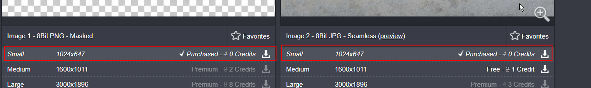

First lets download some textures(scratches etc) for our glass
https://www.textures.com/download/decalssubtle0001/71147?q=decalssubtle0001

Create your object

Select the faces, Shift+right click and select extract faces

Move to Object Mode now if you select the glass section it will look like

Move to Rendering Environment

Select Glass and assign new materials (Blinn)


Navigate to texture and open it

Now the screen should look like this

Select the model and export the selection.(Used lambert for frame)

Export as FBX

Import the Image maps before importing FBX file in Unity

Import the fbx

Imported Successfully